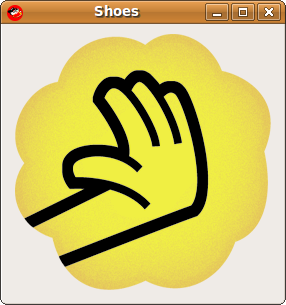

The Shoes Manual
Image
An image is a picture in PNG, JPEG or GIF format. Shoes can resize images or flow them in with text. Images can be loaded from a file or directly off the web. 
To create an image, use the image method in a slot:
Shoes.app do
para "Nice, nice, very nice. Busy, busy, busy."
image "static/disheveled.gif"
end
When you load any image into Shoes, it is cached in memory. This means that if you load up many image elements from the same file, it'll only really load the file once.
You can use web URLs directly as well.
Shoes.app do
image "http://hacketyhack.net/images/design/Hacky-Mouse-Hand.png"
end
When an image is loaded from the web, it's cached on the hard drive as well as in memory. This prevents a repeat download unless the image has changed. (In case you're wondering: Shoes keeps track of modification times and etags just like a browser would.)
Shoes also loads remote images in the background using system threads. So, using remote images will not block Ruby or any intense graphical displays you may have going on.
The full pixel height of the image. Normally, you can just use the height method to figure out how many pixels high the image is. But if you've resized the image or styled it to be larger or something, then height will return the scaled size.
The full_height method gives you the height of image (in pixels) as it was stored in the original file.
The full pixel width of the image. See the full_height method for an explanation of why you might use this method rather than width.
The URL or file name of the image.
Swaps the image with a different one, loaded from a file or URL.
Next: ListBox